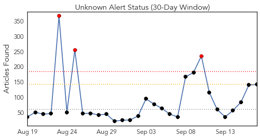
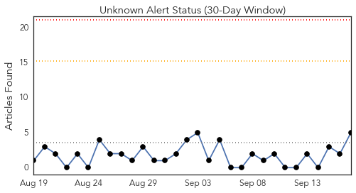
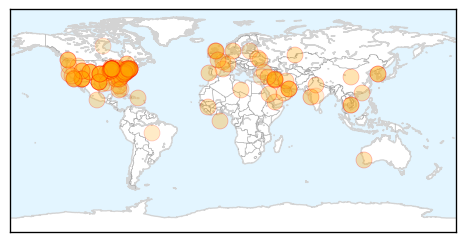
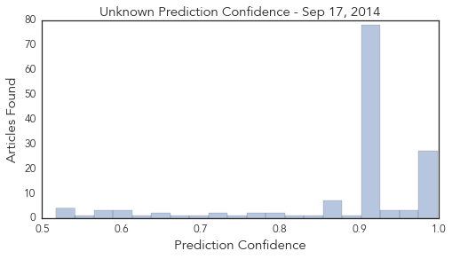

Toggle navigation
Early Warning
Daily Alerts
Unknown
Sep 17, 2014
Compare to:
-
Dengue Fever
Hemmorhagic Fever
Mold/Fungal Infection
Influenza
Meningitis
Pertussis / Whooping Cough
Middle East Respiratory Syndrome
Cholera
Hepatitis
Chikungunya
Yellow Fever
Bubonic Plague
West Nile Virus
Swine Flu
Ebola
Measles
Mumps
30 Day Trends
Web: 3
alerts
, 0
warnings
Twitter: 0
alerts
, 0
warnings
Top Articles:
Showing top 50 articles...
0.999
No cases of Enterovirus EV-D68 in Durham
0.998
The rare respiratory virus sickening children has been confirmed in 16 states across the country
0.998
Children’s respiratory illness spreads to more states
0.997
Enterovirus may be cause of ill children in Connecticut
0.996
EV-D68 cases hit Philly, hospitals on alert
0.996
Rare respiratory illness spreads to a dozen states
0.995
CDC confirms first N.J. case of rare enterovirus D68
0.995
Respiratory virus enterovirus D68 may be in Westchester
0.993
Enterovirus D68 Prompts Hospital Wards to Ban Child Visitors
0.992
Pennsylvania has 3 confirmed cases of respiratory virus that has spread across Midwest
0.991
Health department confirms first case of enterovirus in Connecticut
0.990
Enterovirus 68: Public health alert as 7 new cases confirmed in Ontario, B.C.
0.989
New respiratory virus coming to Arizona
0.987
‘Protocols in place’ to deal with three enterovirus cases in B.C.: Minister
0.987
CDC Confirms First Case of EV-D68 in Connecticut Child
0.984
3 enterovirus cases but don't panic: B.C. minister
0.983
First enterovirus cases confirmed in Pennsylvania
0.983
DPH: One Case Of Enterovirus Confirmed In State
0.983
DPH: One Case Of Enterovirus Confirmed In State
0.982
Possible cases of Enterovirus being investigated at Baystate Med
0.981
Dangerous stomach virus affecting children
0.979
7 cases of enterovirus confirmed in Ont., B.C.
0.979
Oklahoma Becomes 12th State to Report Enterovirus
0.977
First Virginia cases of enterovirus confirmed
0.976
WAFB 9 News Baton Rouge, Louisiana News, Weather, Sports
0.976
Enterovirus respiratory illness hits 12 states, still spreading
0.976
Enterovirus D68: 3 confirmed cases in B.C.'s Lower Mainland
0.968
Kids' virus may have finally reached Arizona
0.963
Virginia has 7 confirmed cases of rare respiratory illness
0.957
Enterovirus confirmed in New Jersey
0.948
Greater Clark County Schools sends parents letter about Enterovi
0.947
First case of enterovirus D68 confirmed in NYC, NJ, Connecticut
0.941
Rare Respiratory Illness Confirmed in 12 States
0.917
Chicago Tribune
0.917
Chicago Tribune
0.917
Chicago Tribune
0.917
Chicago Tribune
0.917
Chicago Tribune
0.917
Chicago Tribune
0.917
Chicago Tribune
0.917
Chicago Tribune
0.917
Chicago Tribune
0.917
Chicago Tribune
0.917
Chicago Tribune
0.917
Chicago Tribune
0.917
Chicago Tribune
0.917
Chicago Tribune
0.917
Chicago Tribune
0.917
Chicago Tribune
0.917
Chicago Tribune
Top Tweets:
No tweets found for Sep 17, 2014
Web/News Articles

Tweets

Article Locations

Article Confidences
